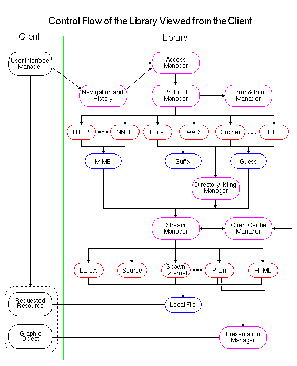

Overview of the Library
The World-Wide Web Library of Common Code is a general code base which
can be used as the basis for building World-Wide Web applications, not
only clients but also servers, and proxy servers. As an example, the
Line Mode Browser, the NeXTStep Editor, the Arena Browser and the HTTP Server (including the Proxy Server) are
all built on top of the Library. It contains code for accessing HTTP, FTP,
Gopher,
NNTP,
and WAIS servers, perform telnet sessions and
access the local file system. Furthermore it provides functionality
for loading, parsing and caching graphic objects plus a wide spectrum
of generic programming utilities.
The Library is written in plain C and is especially designed to be
used on a large set of different platforms. Currently it supports more
than 15 Unix flavors, VMS, and PC and Macintosh support is foreseen
before the end of 1994.
The main application module is a platform dependent module called by
the operating system, and it manages the overall running of the
program. In the Line Mode
Browser, it is HTBrowse. In
the CERN HTTP Server, it is
HTDaemon.
To get a quick overview of the Library and the capabilities, the best
thing is to study the control flow of the Library. The figure below
shows the module interface to a WWW Browser. In the diagram, the
Library code is to the right of the green line, and the client to the
left is the Line Mode Browser.

On behalf of the user, the client parses a request to the access manager that is
the main entry node to the library. When the request has been
fulfilled and data has been received through the network, the data is
parsed back to the client either through the , or the HText module depending on
the interface used by the client. See more on this in Information on presentation modules.
- Graphic Object
- A graphic object is a displayable entity defined and maintained by
the client. It is built from the data contained in a server response
upon a successful request initiated by the user. The data can be of
any format handled by the client. The object can either be built
directly from the data, e.g., if the data object returned is an HTML document, or it can be
generated from a format converter within the Library. An example of
the latter could be the generation of an HTML object from an FTP
directory listing (7-bit ASCII). Graphic objects are in general coded
differently on different platforms. The graphic object is responsible
for displaying itself, catching mouse clicks, and calling the
anchor module, either directly or via the history
and navigation manager. Often the more common term "document"
is used to describe the logical entity which a graphics object
represents and displays. The client can keep the latest generated
documents in memory in order to speed up back-tracking through already
visited documents.
- Access Manager
- All requests from the client goes to the Access Manager. It can
either be passed a URI or an anchor. An anchor is an object
representing the URI of either a graphic object or a fragment of a
graphic object. It contains all information known about the URI. The
anchor module
registers all requested anchors together with anchors found when
parsing hypertext objects. The anchors are stored in a hash table so
that multiple references to a URI all points to the same graphic
object. It furthermore binds all registered anchors together
corresponding to the logical binding between the related data objects.
In other words, the
anchor module generates an internal
model of the part of the Web the user has been in touch with. The
actual bindings between anchors are described in more detail in Anchor Definition.
- Protocol
Manager
- The
protocol manager is invoked by the access
manager in order to access a document not found in memory or in
the cache (for the proxy server it is the proxy cache). Each protocol
module is responsible for establishing the connection to the remote
server (or the local file-system) and extract information using a
specific access method. Depending on the protocol, the protocol
manager either builds a hypertext object itself from the server
response, or it passes a socket descriptor to the stream manager for parsing by one of the parser
modules.
- Stream Format
Manager
- The
stream format manager takes care of the
transportation of streams of data from the network to the client and
vice versa. This module is described in more detail in the Stream description.
- Navigation and
History
- This module keeps track of all visited anchors. The set of visited
anchors is always less than or equal to the total set of anchors
registered in the anchor
module. Whereas the
anchor module manages a small
part of the Web, this module keeps an ordered list of all visited
anchors so the user can do quick navigation through a history
list.
- Client Cache Manager
- This is a single-user disk cache manager specifically for WWW
client applications. It is used to save data objects once they have
been downloaded from the Internet. The difference between a graphic
object stored in memory and a cached data object is that the former is
already parsed and can immediately be displayed to the user whereas
the cached object must be parsed into a graphic object. The CERN proxy server has
its own cache manager to handle a large scale cache that can serve
hundreds of clients connected to it. The client cache is especially
made for clients not using a proxy cache or having a very slow link
but a large local temporary storage.
- Error Manager
- This module manages an information stack which contains
information of all errors occurred during the communication with a
remote server or simply information about the current state. Using a
stack for this kind of information provides the possibility of nested
error messages like:
Error 500
Can't access document (ftp://info.cern.ch/foo.bar)
Reason: FTP-server replies: foo.bar: No such file or directory
- Directory Listing
Manager
- This module handles long directory listings with icons for HTTP
and FTP, and local file access. Long directory listings are supported
for Unix, VMS, and Window NT.
Henrik Frystyk,
libwww@w3.org, April 1995